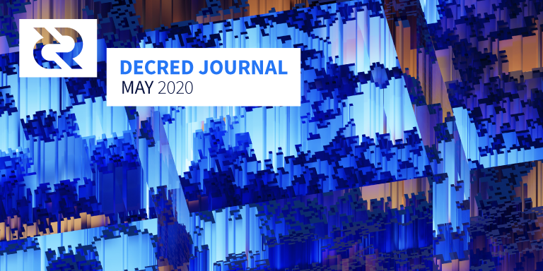

Decred月报 – 2020年5月

图片: Ascending Bits by @saender
五月亮点：
- 发布新的vspd软件，它将取代现阶段使用的dcrstakepool软件，会大大提高所有VSP用户的使用体验。
- Decred DEX软件正在进行公开测试，如果您有冒险精神，为什么尝试一下？
- Politeia新组件已经发布，RFP提案以及CMS的承包商投票功能。
- 最新的v1.5移动客户端的测试版本现已在相应的APP商店中发布-非常欢迎大家测试并在GitHub上提交问题。
开发进展总结
除非另有说明，否则此处报告的工作仅限为“合并到主核心存储库”状态。这意味着这项工作已经完成、审查并集成到高级用户可以构建和运行的源代码中，但对于普通用户来说，还不能在发布的二进制文件中使用。
dcrd:
进行中：
- 去中心化开发基金支付所需的TSPEND操作码已在测试网上成功测试
进行中：
- 对基于选票的VSP API的强化帐户支持
- 代码重构，可从pi-ui重用更多组件
- 能够同时从同一个对等方请求多个块（dcrlnd中SPV支持所需的更改之一）
- 用户界面调整
进行中：
- 混合交易
- 在后端和GUI中的RFP流程已经实施并正在测试中
- 用于更改电子邮件地址的管理实用程序
- 简短的URL
- 图像导航模式
- 不启用javascript查看Politeia进度
- 为了减轻烦人的注释错误，实施了两种临时的解决方法：一种方法是每天运行一次而不是每小时一次，执行昂贵的文件系统检查；另一种方法是在触发该错误的过程中暂时阻止注释
- 许多bug修复
CMS:
进行中：
- 管理员功能可查询承包商的代码统计信息
vspd:
vspd是VSP软件从头开始的实现，它将极大地改善VSP用户的隐私，并进而改善Decred网络的安全性。没有注册，没有电子邮件，没有验证码以及没有要备份的脚本，使用起来也将更加容易。查看公告以获取更多详细信息。
vspd的MVP即将完成，并且dcrwallet已经开始集成。MVP的杰出的功能是获得跨钱包一致性检查，以确保所有钱包都对正确的选票进行投票，并具有正确的投票选择。
v1.1候选发布版已准备好进行测试！此版本包括重新设计的付款处理，新的UI/UX，通过dcrd的工作通知实现更高的效率以及一系列较小的改进和bug修复。有关详细信息，请查看完整的发行说明。
@matheusd发布了一个BTC和DCR发票在其各自的LN之间交换的演示。这实际上是一种“即时交换”，除了它使用的是LN并且是非托管的。请注意，该原型具有已知的向量，并且需要更多的研发才能解决（理想情况下基于PTLCs, but it is quite far away in the future)，但将来还很遥远）。在这个聊天中更多详细信息。
-更安全地加密密码 - 检修客户钱包配置，允许用户指定一个钱包配置文件或手动输入设置 ( 1, 2, 3, 4) - 服务器支持用于计划中的维护和市场重新配置的正常中止交易和客户通知 - 用户浏览器界面中扩展的 “您的订单” - 对用户余额更新改进，以提供最新的余额值 - 添加莱特币支持。服务器dcrdex已支持LTC，现在客户可以使用LTC钱包并在LTC市场下订单。 - 允许从trade命令进行交易 - exchanges命令允许从命令行列出和配置交换 - 添加用户浏览器界面“市场”页面上的市场搜索框 - 改进了注册事件的通知（例如完成费用支付确认） - 多个bug修复和代码重构
合并了来自10个贡献者的59个PR ，添加10K行删除了3K行代码。
即将进行的工作包括：服务器支持待机/还原活动交换（交换状态），如果由于服务器或对手方导致服务器驱动的交换协商失败，则更好地支持客户端启动的退款或交换完成（退款）不活动，扩展的客户端RPC，扩展的服务器管理命令，改进的客户端对服务器挂起/恢复消息的处理。
测试网测试已经开始，欢迎大家参加。主网DEX很有可能在今年夏天启动。
Google Play提供了v1.5版本的Testnet版本。发现Bug欢迎在GitHub上提交。
v1.5的Testnet版本在Apple TestFlight上可用。发现Bug欢迎在GitHub上提交。
进行中：
- 基于交易的当前订单簿（在planetdecred.org for testing)上部署的WIP版本进行测试），在攻击成本页面上的DCR价格增长预测
- 添加原子交换交易标签
- 新增网络信息页面包含减少区块奖励倒计时，以及其它基本信息（一个有趣的入口点，可与了解Decred的人分享）
docs:
其它:
- @mm发布了InvalidationGame，该脚本可在纯PoW网络或混合的PoW + PoS网络（如Decred）上模拟双花攻击。
- Bug Bounty网站发布了一个更新：总共处理了123个提交（+19），其中13个有资格获得付款（+2）
- 随着新内容的推出，一些开发人员在Twitter上更加活跃。您可以关注 @lukebp_, @marco_peereboom, @degeri_crypto等，以获取更多信息。如果您是拥有Twitter帐户的开发人员，则可以通过在Twitter上发布此类dev更新来帮助传播Decred的构建者文化（不要犹豫加入聊天室!)！）
5月（大约）的开发活动统计：〜300个活动PR，〜340个主提交，〜51K行添加和〜26K行删除的分布在16个存储库中（注意：行数不包括Decrediton #2481重新格式化了一个大型存储库）。每个存储库贡献2-10个开发人员。
人员
欢迎新到来的首次贡献者，他的代码已合并到主代码库中： @blaltarriba (politeiagui), @dreacot (dcrandroid), @Ekeh (dcrdata), @guilhermemntt (decrediton), @rstaudt2 (dcrd) 和 @song50119 (dcrdex).
祝贺新承包商获得了承包商认可的支付证书（DCC）：@camilolwi（市场营销），@itswisdomagain（开发），@nachito（市场营销），@tomee（市场营销）。
三个Decred社区成员包含在巴西加密市场Cointelegraph的前50名名单那日：Rafaela Romano在＃35，Gabriel Rhama在＃31和Edilson Osório Jr
截至6月1日的社区统计数据：
- Twitter 关注: 40,492 (-78)
- Reddit 订阅: 9,792 (+31)
- Matrix 用户: 655 (+31)
- Discord 用户: 1,222 (+38)
- Telegram 用户: 2,603 (+46)
- YouTube 订阅: 4,030 (+40), 点赞: 144K (+3.5K since May 8)
- Facebook 关注: 3,632 (+14), 点赞: 3,291 (+11)
- LinkedIn 关注: 810 (+36)
- GitHub dcrd 星星: 543 (+4), 叉子: 240 (+5)
治理
5月份，社区开发基金获得了13594 DCR，并花费了19153 DCR。以3月份的每日 DCR/USD 汇率 $14.11计算，这是收到的$192K和花费的$270K。以2月份的每日平均价格$12.34计算，该月完成工作的美元费用为$236K。截至6月5日，库存余额为630983DCR（1140万美元，折合18.12美元）。
5月份共提交了5份提案，其中4份于6月初开始投票。5月份没有Politeia提案投票。
新提案在《Politeia Digest》第31期中进行了描述，投票结果将在下一期中讨论。
网络
全网算力: 5月的全网算力以约357 Ph/s 的速度开始，而以约386 Ph/s的速度结束，最低为260 Ph/s，峰值为541 Ph / s。截至6月1日的池哈希率分布（大约）：UUPool 38％，Poolin 18％，lab.antpool.com 12％，F2Pool 1.5％，Luxor 1.3％，BTC.com 1.3％，BeePool 0.1％，CoinMine 0.03％，Suprnova 0.02％，其他〜28％。
Staking: 30天的平均票价为141.5 DCR（+3.7）。票价 132.9-159.2 DCR之间变化。锁定金额为5.59-5,080,000 DCR，相当于参与 PoS 的占流通量的48.7-50.3％。
节点: 整个5月，平均有144个公共监听节点，总共229个节点。五月份的平均版本分布：48％dcrd v1.5.1、11％dcrd v1.5.0、6％dcrd v1.6开发版本，4％dcrd v1.5开发和RC版本，2％dcrd v1.4、9％dcrwallet v1.5.1、1.4％dcrwallet v1.5、1.4％dcrwallet v1.4和其他13％。
Lewis Harland发表了一篇有关Decred网络的研研究报告，该研究考虑了许多指标，包括代表矿工风险的算力与美元的比率。报告指出，自2020年1月以来，一些指标有所下降，这表明DCR相对于投入网络的美元处于亏损状态。
@PermabullNino发布了另一个链上研究文章，他在其中探索Decred块时间并介绍了Mining Pulse指示器。
整合
Transak通过与Wyre 的合作，为美国，欧盟和许多其他国家的居民带来了一种通过借记卡购买DCR的新方法。“ Transak使用智能合约将最终用户连接到集中式和分散式交易所的流动性。用户将必须输入简单的KYC信息，但是从头到尾的过程将不到5分钟。” 现在，Transak遍布32个国家/地区，支持14种法定货币和300多种加密资产。
警告：Decred Journal的作者不了解上述任何服务的可信赖性。在将您的个人信息或资产信任给任何实体之前，请先进行自己的研究。
外展活动
Decred参加了Consensus2020：分布式线上活动，其中6个社区成员录制4条视频，所有这些现在都在YouTube上。除了该活动位于美国以外，所有其他（已知）活动在5月都针对拉坦/巴西地区。
Decred in Depth 和 Rough Consensus 总共发布了4个新播客。
在4月开始撰写Medium 博客后，Phoenix Green扩展到了YouTube视频创作领域，截至撰写本文时，他的频道中有10篇关于Decred的视频。恭喜发布，并保持原始质量内容！
Monde PR在五月份的成就：
- 创造并向投资，金融和加密出版物发行3个故事创意
- 提交Decred发言人对7个新闻故事的评论
- 通过加密出版物获得了一次媒体采访和一封电子邮件问答
Monde PR保证的新闻报道：
- 《福布斯》上的一篇文章，重点介绍@ jy-p关于CBDC隐私问题的评论
- Cointelegraph中的一篇文章，重点介绍了@ jy-p对比特币减半的影响的评论，并联合了FXStreet等 12个新闻媒体。评论还包括在Zero Hedge文章和Cointelegraph的第二篇文章中，并联合了12个新闻媒体，包括 Miami Diario和Crypto News Australia。
- Finance Magnates 中的一篇文章，重点介绍@raedah对比特币减半的评论。@raedah的评论也包含在与此主题相关的第二篇《金融大亨》文章中。
- Cointelegraph中的一篇文章，重点介绍了@Checkmate对比特币减半的评论，并联合了5个新闻媒体，包括Investing.com
- 路透社的一篇文章，其特色是@ jy-p的评论，并与包括《纽约时报》（现已删除），《商业内幕》和纳斯达克在内的 70个新闻机构联合发布。在随后有关Yahoo Finance，CryptoSlate和msn.com减半的文章中，也引用了 @ jy-p的评论。
- 8btc.com上的一篇文章，内容来自@ jy-p关于比特币减半的评论
- Cointelegraph中的一篇文章，重点介绍@Checkmate对比特币减半的评论
- AMB Crypto上的一篇文章，其中介绍了@ jy-p对CBDC的评论
- 通过上述努力，5月在21个国家/地区总共发表了123篇文章，请点击这里查看完整列表
活动
参加：
- 4月2日 - Walicj.com - 互联网。DecredCN和Walicj.com在微信小组中共同组织了AMA，主要介绍Decred的治理模型，原子交换和dcrdex。该记录已发布在他们的网站上。（四月错过）
- 4月23日 - Jueves CryptoDrinks Decred 互联网。@elian：“这是一个非常休闲的视频通话，与Blockchain Land的社区成员进行了通话，Decred是通话的主持人之一。我对该项目进行了简短介绍，其余的则回答了有关加密货币的一般问题（在哪里购买，如何存储，如何发现诈骗，对减半的想法，交易策略以及采矿是否有利可图。它持续了一个半小时，并有20-25名参与者。” （四月错过）
- 4月28日 - Panel on Cryptosecurity - 互联网。@elian：“它是由Binance用西班牙语组织的，它是一种AMA，但是在加密安全方面，有关如何存储和OPSEC最佳实践的问题。我有很多机会重点介绍Decred在开放式混合区块链上的工作源软件和抗硬性。AMA的观众和其他来宾都给予了很好的回应。” （四月错过）
- 5月2日 - Bitconf Live - 互联网。Decred是赞助商。OriginalMy的创建者兼首席执行官小Edilson Osorio Jr发表了题为“大流行期间区块链的影响”的演讲，并介绍了一个新的应用程序来验证和验证开处方的过程，而无需与患者进行身体接触（Decred是4个区块链之一）由应用使用）。JoãoFerreira（@girino）谈到了“权力下放与治理”，DEX，原子交换和Politeia，约有2500人观看了此演讲。这些视频可在Facebook和Decred Brasil YouTube频道上找到。
- 5月6日 - Crypto Resources Livestream - 互联网。该视频流长达2小时，约有300人观看。@camilolwi介绍了区块链和比特币，然后@elian谈论了Decred将近一个小时。
- 5月7日 - Hablemos Decred 5 - 互联网。
- 5月12日 - Consensus: Distributed - 互联网。Decred的代表来自@lukebp的Politeia，@ matheusd的LN，@ chappjc和@ buck54321的dcrdex和dcrdata，@ Checkmate的链上见解，最后是@ jy-p的演讲，概述了Decred开发的1年。以下媒体部分中的所有链接。
- 5月13日 - Digital Governance - 互联网。这个与Decred，区块链治理和去中心化数字货币有关的约20人网络研讨会是与Hack por la Paz共同组织的。问题围绕着理解我们日常生活中的治理，如何将其推算到数字货币和财富以及CBDC对加密货币市场的影响。
- 5月14日 - Decentralized Governance Panel - 互联网。@caibarrad和@adcade在“什么是分散式治理和DAO？”小组中代表Decred，该小组与BlockchainEx共同组织，是哥伦比亚Decred生态系统发展的一部分。
- 5月16日 - Open-Source Funding Webinar - 互联网。@victorarubin和@tomee与Hack Space Peru共同组织了该活动，作为该地区推广活动的一部分。@pablito进行了有关开源软件最大挑战之一的演讲，资金筹集，探索了十几种方法，最后介绍了Decred解决方案。
- 5月19日 - Latoken Blockchain Economic Forum - 互联网。@elian在36分钟的主题演讲中谈到了Decred，项目资金/支出，Politia，LN和隐私实施。
- 5月20日 - Bitcoin and Crypto Panel - 互联网。@elian：“作为Talent Land的Business Land的一部分，我参加了有关比特币和加密货币用例的小组讨论，并重点介绍了Politeia和dcrtime作为FOSS基础设施，包括针对政府和企业的案例，以及DAO如何支付其全球劳动力。有关DCR和支付处理基础设施的汇款市场以提高采用率的信息。”
- 5月25日 - BlockConf Digital - 互联网。Decred是铜牌赞助商。与预期相反，无法知道人们是否参加了虚拟展位，也没有与人互动的简便方法。@elian在Latam上发表了关于加密货币的演讲，并简要介绍了Decred，Politeia和Latam提案。
媒体
精选文章：
- Decred on-chain: @PermabullNino (medium)
- Decred price: @OneAnalyst (medium)
- 更隐私的Staking方案 @jholdstock (blog.decred.org)
- Decred. 分叉之路 by @mrbulb (github)
翻译:
- 一种新型的DEX - 西班牙语 by @francov_
- Politeia Digest 31 - 西班牙语 by @pablito.
- 2020年4月的Decred Journal被翻译成阿拉伯语（@arij），中文（@Dominic），波兰语（@kozel）和西班牙语（@francov_）。值得注意的是，所有四个都在GitHub上。谢谢你们！
视频:
- Decred 双周报 - 2020年5月3日 @Exitus (youtube)
- Decred Construct 开发人员Luke Powell谈Politeia和Matheus Degiovani谈LN (youtube)
- Decred Construct DEX 开发人员Brian Stafford和Jon Chappelow0 (youtube)
- Trade Secrets Decred链上分析师Checkmate (youtube)
- Decred Changelog 项目负责人Jake Yocom-Piatt (youtube) with Q&A (youtube)
- 365 Decred days - CoinDesk (coindesk.com) - 这是CoinDesk网站上完整的Decred Foundations程序，它们通过Zoom进行广播，因此质量不如YouTube在上面上传的质量 (youtube)
- Decred 双周报 - 2020年5月22日 @Exitus (youtube)
音频:
- Decred in Depth Ep. 24 - @chappjc和@ buck54321谈论dcrdex (libsyn)
- Decred in Depth Ep. 25 - @raedah谈论了Decred的开发工作，从为DCP-0001和dcrdata做贡献到移动钱包等新项目，与非洲和亚洲开发者组成了一个小组，以及新的Planet Decred提案 (libsyn, soundcloud)
- Rough Consensus Ep. 5 - 通货紧缩，美元和贬值。@ mr.black，@ Checkmate和@PermabullNino讨论了比特币减半，传统市场的救济集会，通货紧缩和通货膨胀对经济的现实，以及Decred如何被低估为SoV竞争者。 (libsyn)
- Rough Consensus Ep. 6 - Seth Simmons和间谍团队一起谈论叙事如何驱动加密货币。 (libsyn)
社区讨论
通讯系统新闻：
- Riot发布了一个巨大的更新，该更新已部署到chat.decred.org。默认情况下，新DM启用端到端加密。确保备份密钥，以免丢失对加密聊天记录的访问权限。
精选Reddit帖子：:
- @mrbulb 关于他的“ Forks in the road”文章的帖子有19条评论，大多数是来自表示对此表示感谢的人，但是有一位用户删除了他们的评论
- 在伊朗进行宣传的预案
- 时间锁的应用
精选Twitter讨论:
- 在比特币减半的那天，@ ammarooni 提醒奥地利经济学家建议不要突然改变货币发行
- @lukebp在Twitter上表达了更多有关Politeia工作的声音
- @lukebp 在一些简短的推文中解释了 Politeia，CMS和DCC流程
- @chappjc makes the dcrdex testnet pre-alpha official
- @chappjc使dcrdex testnet pre-alpha 正式
- @elian揭露了有关银行账户即将发生的严酷现实
市场表现
5月DCR交易价格在12.62-15.66美元，BTC 0.0014-0.00167之间。每日平均价格为$14.11。
OneAnalyst进行的一项季节性研究探讨了DCR的每日、每周和每月的收益影响（DCR似乎更倾向于星期六）。
总结第一阶段做市商行为由@richardred分析订单簿的深度随着时间DCR和其它资产，他认为没有看到有机增长超出I2维护的订单。
相关外部信息
比特币一直期待已久的减半发生在5月11日，它占据了加密新闻的主导地位，甚至渗透了更多的 主流 消息来源 -其中大部分集中在对价格可能产生的影响上。
Cointelegraph组织的长达7个小时的现场直播是为纪念这一事件而进行的几项现场活动之一，因此中途毫不客气地暂停了播放，并因YouTube是“有害内容”而被YouTube删除。
达世币投资基金会（Dash Investment Foundation）宣布将不再寻求决策自主权，并将减少其对达世币司令部的要求，从而应对了一些摩擦（主节点拒绝了提案和私人批评），并在第二季度提出了新的风险投资策略2020年。
Reddit引入了新的基于区块链的令牌，将在/ r / cryptocurrency（Moons）和/ r / FortNiteBR（Bricks）上进行试用。相对于业力分数（50％），主持人10％，Reddit 20％和“更广泛的Reddit社区” 20％，subreddit的用户将获得令牌。除了充当subreddit点上的声誉徽章之外，还可以用于解锁功能，例如在评论中发布gif。还描述了民意测验的点加权变体。
科技巨头和数十个政府已经决定，智能手机的后门能力还不够，并发起了前所未有的大规模监视计划（归因于COVID-19）。许多技术的标题中都添加了“保留隐私”，这一次可能真的很安全。一旦大流行“结束”，甚至有可能终止跟踪系统。除了讽刺，对于加密货币用户来说，这意味着他们的移动设备上存在许多新的隐私和安全风险，并且是考虑使用替代操作系统甚至硬件的强烈动机。
关于月报
这是Decred Journal的第26期。有关所有问题，镜像和翻译的索引，请参见此处。
在经过最少的健全性检查之后，来自第三方的大多数信息都会直接从来源中继。Decred Journal的作者无权验证所有声明。请当心诈骗，并自行进行调查。
我们随时欢迎您的反馈和贡献。
感谢 (字母排列):
- 写作和编辑: bee, chappjc, degeri, elian, Exitus, l1ndseymm, richardred
- 评论和反馈: davecgh, dnldd, Dominic, emiliomann, jholdstock, jrick, lukebp, matheusd, raedah
- 封面图片: saender
中文社区
欢迎同时关注英文月报了解更多最新消息